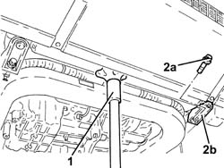
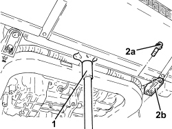

1088B29 ENGINE COOLING RADIATOR SUPPORT (1), LH OR RH - R R
- Path
- Procedures > 10 ENGINE > 1088 ENGINE COOLING > 1088B ENGINE COOLING RADIATOR > 1088B29 ENGINE COOLING RADIATOR SUPPORT (1), LH OR RH - R R
- Kind
- repair procedure (removal / refitting; the operation number is the code)
- Applies to
- engines: 1.8, 2.2, 1.9 JTD 16v; all production periods
- Interactive page
- https://sloeber94.github.io/elrnDB-fCrm/en/#/194000399
Applies to: engines: 1.8, 2.2; all production periods
 Removing
Removing
 Refitting
Refitting- Position the vehicle on a lift.
Op. 7055B54 UNDER ENGINE PROTECTION/GUARD - R.R.
1. Position a hydraulic jack underneath the radiator.
2. Undo the bolt (2a) and remove the engine coolant radiator support (2b), on the side concerned.

Applies to: engines: 1.8, 2.2; all production periods
Refitting
Removing- Place the engine coolant radiator support in its housing and secure it tightening the bolt to the recommended torque.
Component | Fastening | dia | Value (daNm) | Validity |
|---|---|---|---|---|
Engine cooling radiator supports | Bolt | - | (front suspension frame side) 1.5 |
- Remove the hydraulic jack from underneath the engine coolant radiator.
Op. 7055B54 UNDER ENGINE PROTECTION/GUARD - R.R.
- Remove the vehicle from the lift.
Applies to: engines: 1.9 JTD 16v; all production periods
Removing
Refitting- Position the vehicle on a lift.
Op. 7055B54 UNDER ENGINE PROTECTION/GUARD - R.R.
1. Position a hydraulic jack underneath the radiator.
2. Undo the bolt (2a) and remove the engine coolant radiator support (2b), on the side concerned.

Applies to: engines: 1.9 JTD 16v; all production periods
Refitting
Removing- Place the engine coolant radiator support in its housing and secure it tightening the bolt to the recommended torque.
Component | Fastening | dia | Value (daNm) | Validity |
|---|---|---|---|---|
Engine cooling radiator supports | Bolt | - | (front suspension frame side) 1.5 |
- Remove the hydraulic jack from underneath the engine coolant radiator.
Op. 7055B54 UNDER ENGINE PROTECTION/GUARD - R.R.
- Remove the vehicle from the lift.